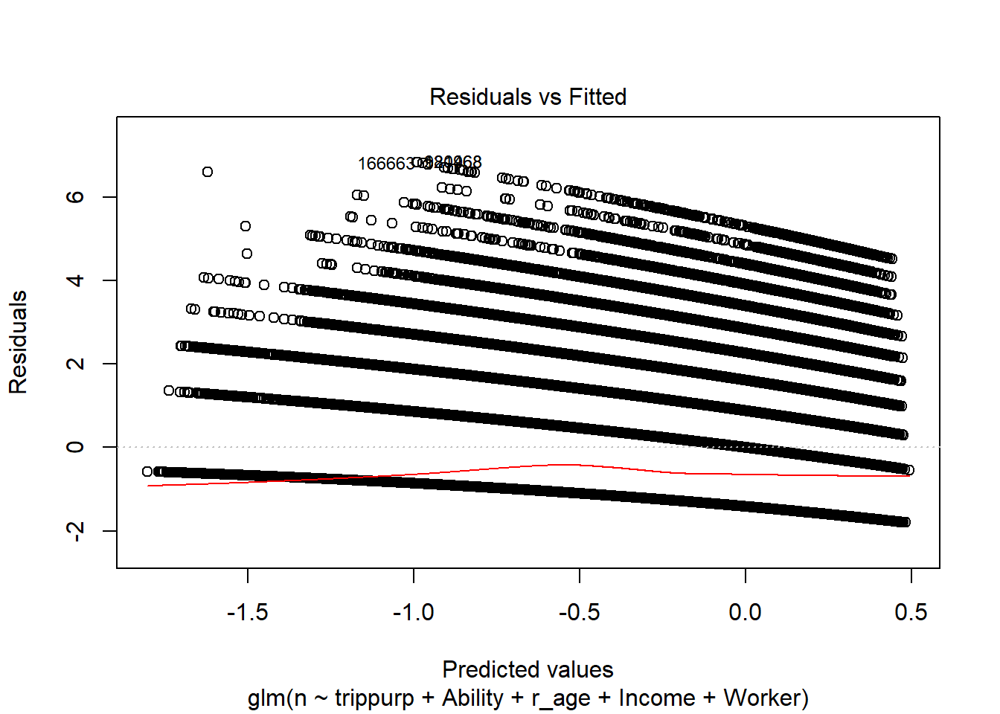

The NHTS asks respondents if they have “a temporary or permanent condition or handicap that makes it difficult to travel outside of the home.” If they respond yes, the NHTS asks follow- up questions about the mobility devices they use, such as canes or wheelchairs. It also asks follow-up questions about how the condition affects their travel—for example, by limiting their driving to daytime. For the rest of this report, “people with disabilities” refers to people who report having travel-limiting disabilities [@Brumbaugh2018].
In this study, the population was divided into three groups: Disabled individuals who reported using a wheelchair (either mechanical, manual or both) or scooter are labeled “Wheelchair”; disabled individuals (excluding those who use a wheelchair or scooter) are labeled “Disabled”; and the general population who did not report a “travel-limiting” disability are labeled “Abled”.
knitr::opts_chunk$set(echo = TRUE)
# install.packages("devtools")
# devtools::install_github("byu-transpolab/nhts2017")
library(nhts2017)
library(tidyverse)
library(scales)
library(pander)
# for help understanding the kableExtra library
# (https://cran.r-project.org/web/packages/kableExtra/vignettes/awesome_table_in_html.html)
# there may be some issues with this table going to html vs pdf and latex
library(kableExtra)
library(Stack)# This function is designed to create a table of distributions by ability type for each factor in
# a variable (i.e. income, age, worker status etc.)
distributions <- function(data, variable){
quote_var <- enquo(variable)
data %>%
filter(Ability != "NA",
!!quote_var != "NA") %>%
# Calculate number of people in each combination of income and ability.
group_by(Ability, !!quote_var) %>%
summarise(population = sum(wtperfin)) %>%
mutate(Population = population,
`Distribution(%)` =
percent(population/sum(population),
accuracy = 0.1),
Variable = as.factor(!!quote_var)) %>%
select(Ability, Variable, `Distribution(%)`) %>%
spread(Ability, `Distribution(%)`)
}# This table shows the general population distribution, the number of respondents, and the respective
# distribution.
nhts_persons %>%
filter(r_age > 5) %>%
mutate(Ability =
case_when(
w_chair == "07" | w_mtrchr == "08" | w_scootr == "06" ~ "Wheelchair",
medcond == "01" ~ "Disabled",
medcond == "02" ~ "Abled")
) %>%
group_by(Ability) %>%
summarise(Survey = n(),
Population = sum(wtperfin)) %>%
mutate(Distribution =
percent(Population/sum(Population), accuracy = 0.1)) %>%
filter(Ability != "NA") %>%
pander()| Ability | Survey | Population | Distribution |
|---|---|---|---|
| Abled | 236051 | 271384034 | 91.4% |
| Disabled | 20801 | 21048869 | 7.1% |
| Wheelchair | 4335 | 4354116 | 1.5% |
The table below considers variables that are included in the model, as they are probable perameters in influencing trip count by purpose. The table displays the population distribution for each ability group, for example, 49.2% of the “Wheelchair” population is in the Low income group. Then that raises the question, is number of trips more infuenced by income or by ability?
# This table will show all the variables useful for the regression model and show the distribution for each
# of the populations: Abled, Disabled, Wheelchair
# the final.rds data has the full grid with all of the trip purpose tally per person (in addition to the
# entire persons attribute file)
my_nhts <- read_rds("data/nhts_data.rds")
# use the distribution function built for this project to construct the distribution tables
age <- distributions(my_nhts, Age)
income.actual <- distributions(my_nhts, hhfaminc)
income <- distributions(my_nhts, Income)
work <- distributions(my_nhts, Worker)
mode <- distributions(my_nhts, Mode)
# now the stacking part. only one at a time please :)
Stack(age, income) %>%
Stack(work) %>%
Stack(mode) %>%
# pipe into the kable function
kable(caption = " 2017 NHTS Data Distribution") %>%
kable_styling("striped", full_width = F) %>%
# Specify which row numbers are grouped together (i.e. from 1, to 10)
pack_rows("Age", 1, 10) %>%
pack_rows("Income Group", 11, 14) %>%
pack_rows("Worker Status", 15, 17) %>%
pack_rows("Mode Choice", 18, 26)| Variable | Abled | Disabled | Wheelchair |
|---|---|---|---|
| Age | |||
| 0 - 10 | 6.1% | 0.9% | 1.1% |
| 10 - 20 | 12.4% | 3.5% | 1.6% |
| 20 - 30 | 13.7% | 6.2% | 3.3% |
| 30 - 40 | 16.9% | 5.9% | 4.9% |
| 40 - 50 | 15.0% | 9.8% | 8.0% |
| 50 - 60 | 15.1% | 22.6% | 14.5% |
| 60 - 70 | 13.1% | 24.8% | 27.9% |
| 70 - 80 | 5.9% | 15.1% | 21.5% |
| 80 - 90 | 1.6% | 8.8% | 11.4% |
| 90 - 100 | 0.3% | 2.3% | 5.8% |
| Income Group | |||
| Low | 15.6% | 45.7% | 49.2% |
| Mid-Low | 20.1% | 25.1% | 23.1% |
| Mid-High | 30.8% | 19.4% | 17.5% |
| High | 33.5% | 9.7% | 10.2% |
| Worker Status | |||
| Full-Time | 45.1% | 7.9% | 3.5% |
| Part-Time | 12.9% | 8.0% | 2.5% |
| Unemployed | 42.0% | 84.1% | 94.1% |
| Mode Choice | |||
| Car (Driver) | 61.6% | 45.6% | 35.2% |
| Car (Passenger) | 10.1% | 15.7% | 17.4% |
| Van (Driver) | 4.2% | 3.2% | 4.2% |
| Van (Passenger) | 2.9% | 3.3% | 4.9% |
| Walk | 10.0% | 11.5% | 4.4% |
| Local Transit | 2.1% | 3.6% | 3.3% |
| Paratransit | 0.0% | 0.9% | 2.3% |
| Taxi (Including Uber/Lyft) | 0.5% | 0.6% | 1.2% |
| Other | 8.5% | 15.5% | 27.0% |
# Organize the data so that trips can be counted and zero trips can be accounted for
#option to use just person attribute
persons <- read_rds("data/persons.rds")
# the grid makes it possible to count zero trips
grid <- expand_grid(
# uses only the unique hhpersonids found in the new_trips data
hhpersonid = unique(my_nhts$hhpersonid),
# uses only HBO, HBW, HBSOCREC, NHB, and HBSOP
trippurp = unique(my_nhts$trippurp)
) %>%
filter(trippurp != "-9") %>%
# now join it with the trip purpose counts
left_join(
my_nhts %>%
group_by(hhpersonid, trippurp) %>%
# count the trips by purpose for each person
tally() %>%
mutate(n = ifelse(n > 10, 10, n)
),
by = c("hhpersonid", "trippurp")
) %>%
# change the NAs to 0s
mutate(n = ifelse(is.na(n), 0, n)) %>%
# i need to join this with persons information then I can perform the regression
# From this point there are attributes associated with each trip (length, mode).
# so if there are trips taken then n is repeated so that each trip can have specific
# attribute data attached.
# left_join(my_nhts)
left_join(persons)
# note that when joined with persons you cant use variables such as trip length or modefit.0 <- glm(n ~ trippurp + Ability + r_age + Income + Worker, family = "poisson", data = grid)
summary(fit.0)##
## Call:
## glm(formula = n ~ trippurp + Ability + r_age + Income + Worker,
## family = "poisson", data = grid)
##
## Deviance Residuals:
## Min 1Q Median 3Q Max
## -1.7991 -1.1971 -0.9256 0.5345 6.8267
##
## Coefficients:
## Estimate Std. Error z value Pr(>|z|)
## (Intercept) -0.4467411 0.0047186 -94.677 < 2e-16 ***
## trippurpHBSHOP 0.0238139 0.0032720 7.278 3.39e-13 ***
## trippurpHBSOCREC -0.5422519 0.0038384 -141.271 < 2e-16 ***
## trippurpHBW -0.4743553 0.0037579 -126.229 < 2e-16 ***
## trippurpNHB 0.4901339 0.0029555 165.838 < 2e-16 ***
## AbilityDisabled -0.3062477 0.0047796 -64.074 < 2e-16 ***
## AbilityWheelchair -0.6429680 0.0117079 -54.917 < 2e-16 ***
## r_age 0.0027991 0.0000514 54.454 < 2e-16 ***
## IncomeMid-Low 0.0493636 0.0037975 12.999 < 2e-16 ***
## IncomeMid-High 0.0856789 0.0035097 24.412 < 2e-16 ***
## IncomeHigh 0.1279816 0.0035309 36.246 < 2e-16 ***
## WorkerPart-Time 0.0637668 0.0035214 18.108 < 2e-16 ***
## WorkerUnemployed -0.1518752 0.0023540 -64.517 < 2e-16 ***
## ---
## Signif. codes: 0 '***' 0.001 '**' 0.01 '*' 0.05 '.' 0.1 ' ' 1
##
## (Dispersion parameter for poisson family taken to be 1)
##
## Null deviance: 2141714 on 1280514 degrees of freedom
## Residual deviance: 1989809 on 1280502 degrees of freedom
## (40655 observations deleted due to missingness)
## AIC: 3115979
##
## Number of Fisher Scoring iterations: 6plot(fit.0, 1)